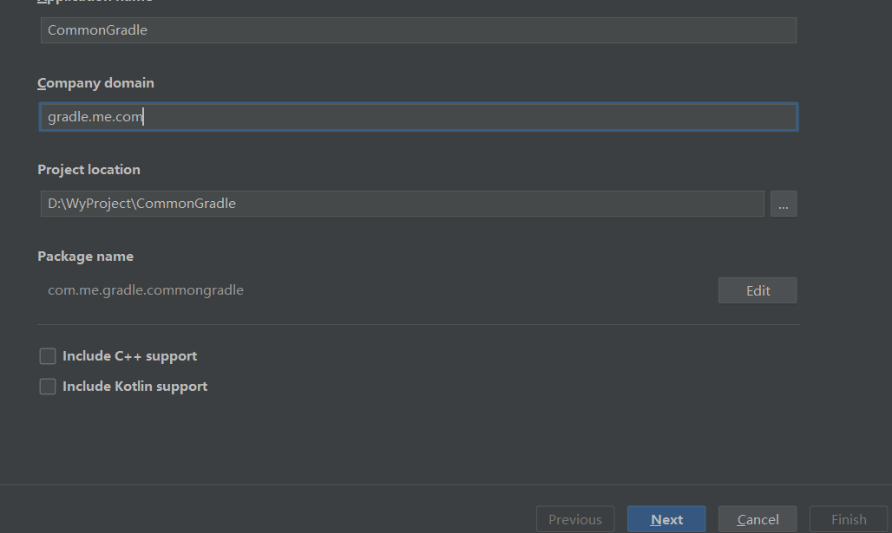
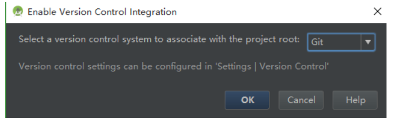
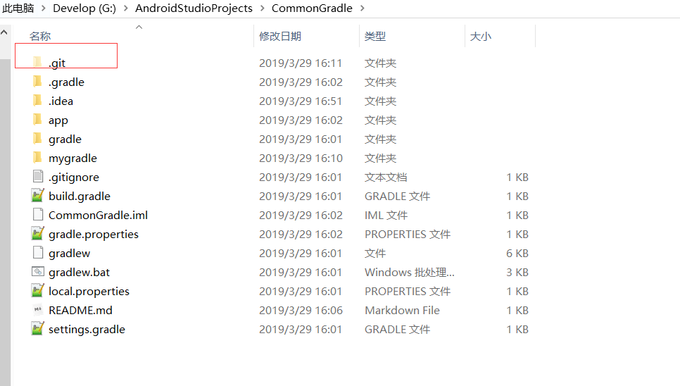
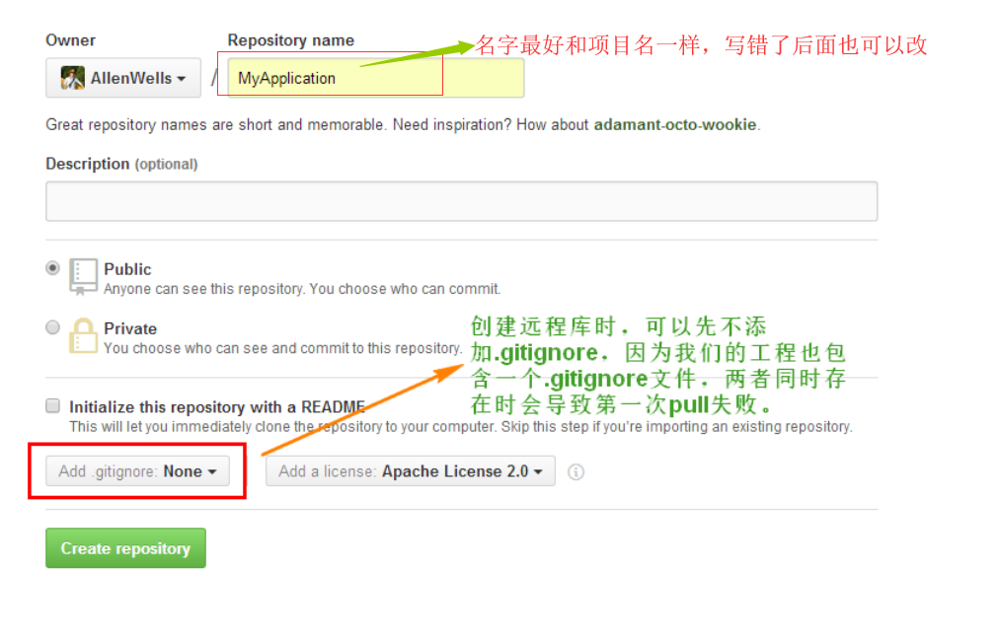
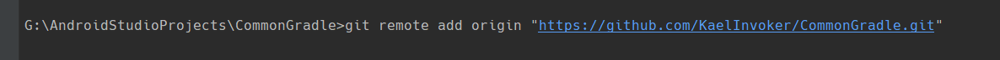
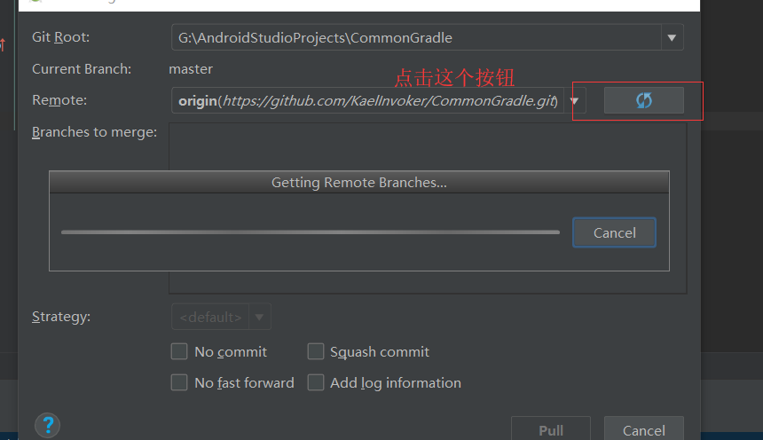
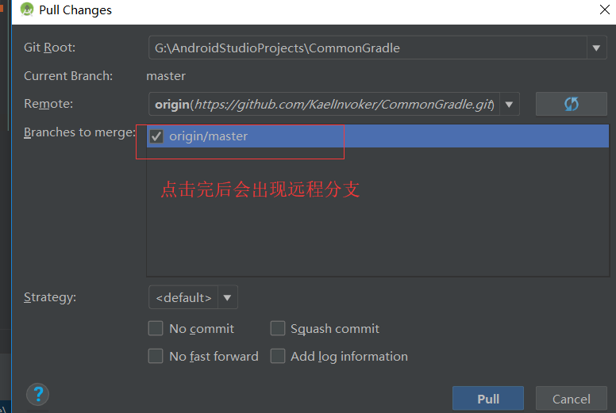
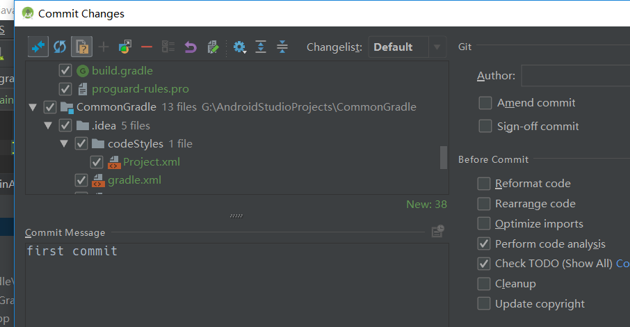
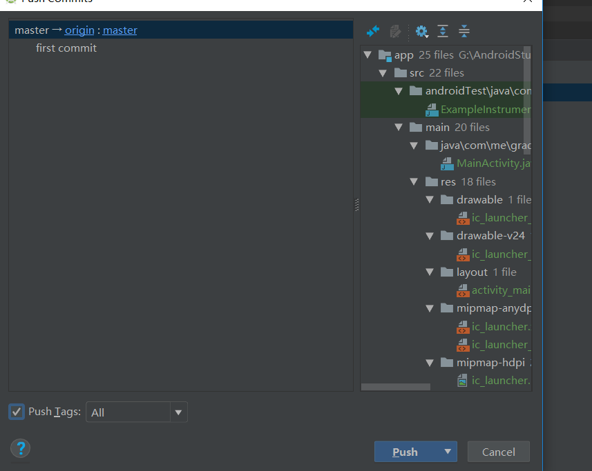
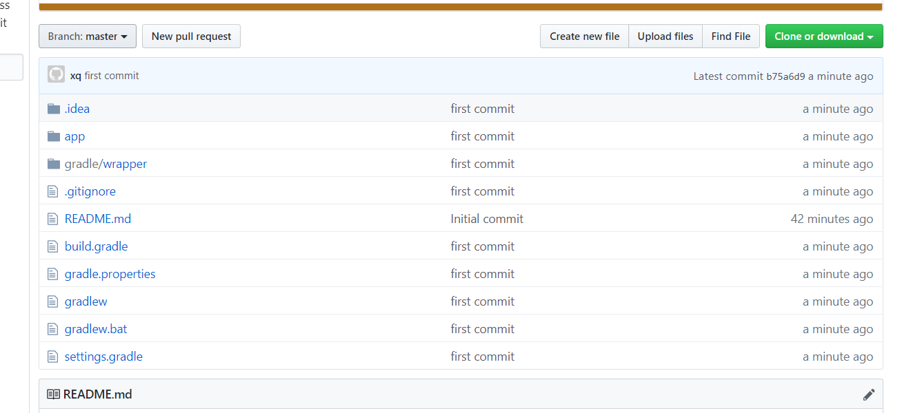

本篇文章是记录如何利用Git和Android Studio将已有的项目或者新建的项目上传的自己的Github上。
准备项目
项目可以是已有的，也可以是新建的项目，这里为了全部演示，就从头新建一个。
如下图，新建一个项目，名字叫CommonGradle。

创建好项目后，要为项目开启VCS：
点击Android Studio菜单VCS->Enable Control Integration，选择Git，点击OK，这个过程相当于做了git init操作，如下图：

选择完成后，Android Studio会提示Git创建成功，同时在我们的项目的根目录下会多出一个.git的隐藏文件夹，如下图：

创建远程仓库
在自己的Github上创建远程仓库，如下图：

创建好仓库后，复制好仓库的远程地址，然后在项目的根目录下打开Git Bash，或者直接在Android Studio项目的终端输入如下命令：
1 | git remote add origin "https://github.com/KaelInvoker/CommonGradle.git" |

将远程仓库的内容pull到本地
第一次push项目之前，这一步是必须的，否则会出现push rejected，另外，如果这一步中远程仓库和本地项目有文件重复，也会导致pull失败，如下所示：
点击Android Studio菜单VCS->Git->Pull，然后在下图中点击刷新的图标。点击后，会出现远程的分支。勾选上该分支，再点击pull操作。


push项目代码到远程
在上面Git init后，我们的所有代码都是放在Unversioned Files。
所以首先要将这些文件放到Git文件提交区，鼠标右击Unversioned Files，选择Move to Another ChangeList。接着，commit and push，就完成了。如下图


